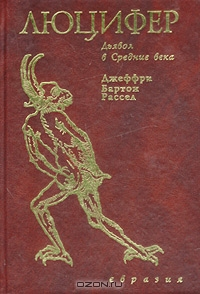
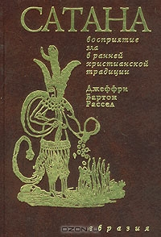
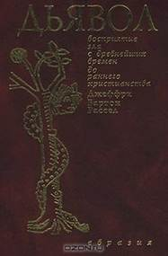
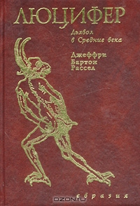
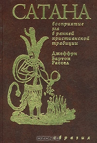
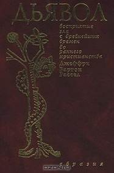

Warrax
Ex libris de Satanae IV:
Рассел Дж.Б.: Дьявол/Сатана/Люцифер/Мефистофель/Князь Тьмы
a) Джеффри Бартон Рассел «Дьявол. Восприятие зла с
древнейших времен до раннего христианства» — СПб., Изд. группа
«Евразия», 2001, 408 с, тираж 2000 экз.
b) Джеффри Бартон Рассел «Сатана. Восприятие зла в ранней христианской
традиции» — СПб., Изд. группа «Евразия», 2001, 320 с, тираж 2000 экз.
c) Джеффри Бартон Рассел «Люцифер. Дьявол в Средние века» —
СПб., Изд. группа «Евразия», 2001, 448 с, тираж 2000 экз.
d) Джеффри Бартон Рассел «Мефистофель. Дьявол в современном мире»
— СПб., Изд. группа «Евразия», 2002, 448 с, тираж 2000 экз.

 

Примечание: обложки взяты с ozon.ru, почему-то они там разноцветные. На самом деле цвет обложки — как у «Люцифера», только потемнее.
Примечание: только сейчас выяснил, есть еще заключительная
часть:
e) Джеффри Бартон Рассел «Князь тьмы. Добро и зло в истории
человечества» — СПб., Евразия, 2002г. 448 с.
В свое время умудрился пропустить. В pdf сейчас скачал, а в бумажном виде надо
будет искать у букинистов…
Описание из самих книг.
«Дьявол»: «В книге выдающегося американского историка и философа Дж. Б. Рассела представлена история персонификации зла, которую сам автор называет Дьяволом, хотя в различные времена и у разных народов его имя, род и число изменялись. Дьявол — это лишь имя зла. Автор не берется судить об “объективной реальности” Дьявола, о том, что такое Дьявол “на самом деле”. Его цель состоит в том, чтобы проследить формирование традиционных представлений о Дьяволе и приблизиться, таким образом, к пониманию сущности зла. Именно с этой целью американский ученый прослеживает историю индуистских, буддийских, египетских и зороастрийских представлений о злом начале и показывает их влияние на формирование античной и иудео-христианской концепции Дьявола».
«Сатана»: «Второй том доводит историю развития этого концепта в христианской мысли вплоть до V в. н.э., когда уже были сформированы в общих чертах основные направления демонологической традиции. Автор, главным образом, анализирует христианскую традицию (обзор иудейской постапокалиптической мысли дается в сжатом виде) и сосредотачивают свое внимание на западной и восточной ветвях христианства, включая дополнительно исследование по воззрениям еретиков».
«Люцифер»: «Основной проблематикой книги… является развитие исторического представления о дьяволе в различных цивилизациях, которое исследуется при помощи сравнительного метода, позволяющего проследить, каким образом концептуальное зло персонифицируется через различное преломление своей негативной сущности. В книге рассматриваются средневековые учения о дьяволе, возникшие на православном Востоке, католическом Западе и в исламском мире. Поскольку демонология обрамляется в четкую структуру в Средневековье, особый акцент делается именно на средневековой традиции, впитавшей в себя догматизм и мистику как две составляющие концепта о дьявола. Автор пытается выявить различные аспекты проявления персонифицированного зла, анализируя не только его догматические и канонические определения, но и поднимая огромный пласт народных преданий, зафиксированных в фольклоре различных народов Европы и Азии. Средневековый фольклор непосредственно выражает всю глубину человеческих переживаний и страхов при личной встрече со злом».
«Мефистофель»: «Данная книга охватывает период, начиная от Реформации и до настоящего времени. В отличие от трех первых книг, задачей которых было детальное описание становления и развития единой традиции концепта Дьявола, четвертая книга раскрывает разрушение единства этой традиции. Само ее заглавие отражает фрагментарность, так как имя Мефистофеля изобретено в шестнадцатом веке для изображения Дьявола в легенде о Фаусте, которая, в конце концов, привела западную литературу к таким нетрадиционным взглядам как воззрения Гете».
«Князь Тьмы»: «это своеобразный итог беспрецедентного проекта, осуществлявшегося профессором Расселом на протяжении двадцати лет, основная задача которого, по признанию самого профессора, состояла в том, чтобы “разъяснить проблему существования зла”. В своих предыдущих книгах о Дьяволе знаменитый протестантский философ попытался достичь определенного понимания этой проблемы через изучение истории представлений о Дьяволе как об одним из самых могущественных символов зла.
Настоящая книга представляет собой общий контур истории этих представлений, изложенный в одном томе. Автор ставит себе задачей изложить в обобщающем труде историю Дьявола в западном мире от самого начала и до наших дней, ориентируясь при этом не только и не столько на академическую, сколько на самую широкую публику.
Основываясь в основном на том же материале, который использовался в предыдущих четырех книгах, он стремится избежать излишней детализации и огромных примечаний, сосредотачивая внимание читателя “на наиболее важных вопросах этой истории и показывая глубочайшие ее подводные течения”».
Главный недостаток этой серии книг виден из описаний: речь идет не о Сатане как таковом, а о некоем «зле», которое-де приносит Дьявол.
В Princeps Omnium (напоминаю, что вышел дополненный вариант в бумажном виде) есть глава «Добро/зло — мифы и реальность», там вопрос разобран, надеюсь, достаточно понятно. Из предисловия к «Дьяволу»:
«Что такое зло? В общепсихологическом плане — это опыт гибели, разрушения, предчувствия смерти, наличия силы, оказывающей сопротивление не только нашим планам и чаяниям, но и самому нашему бытию. Однако зло — не просто человеческая оценка происходящего с ним или с окружающим. За ним стоит какая-то реальность [...] Нечто сопротивляется нашим замыслам и предположениям о принципиальной доброжелательности мироздания, в котором мы пребываем».
Вот такая психопатология: берем абстрактное, сугубо субъективное понятие, затем его сначала субстанциализируем, затем персонифицируем (причем сугубо антропоморфно), и получаем такую вот, гм, забавную концепцию: «Каков же Дьявол, если он действительно существует? Если этот концепт вообще имеет хоть какое-то значение, то Дьявол — это традиционный Князь Тьмы, могущественная личность, наделенная сознанием и волей, чья энергия полностью направлена на разрушение космоса и причинение страданий существам этого космоса».
Тем не менее, автор переработал огромное количество фактологического материала, за что ему большая сатанинская благодарность. Причитания на тему «это зло!!!» легко фильтруются, а интерпретация фактов — дело читателя. К тому же, Рассел, если исключить его морализаторство, подходит к исследованию вполне научно — скажем, понимает, что образ Сатаны в разные времена и в разных культурах отличается. Так что основной недостаток — это зацикленность на аспекте «зла», пропускаются другие аспекты концепта. Впрочем, стараясь раскрыть тему, автор дает дополнительные данные, часто весьма интересные. Скажем, в последней книге даже дана подборка на тему «места в Библии, говорящие о двойственной природе бога» — но все равно виноват во всем Сатана :-)
Таким образом, пенталогию Рассела нельзя считать адекватным трудом «о Сатане per se», но она является отличным источником фактологичкеского материала для независимо мыслящего читателя.
Стоит ли читать? Обязательно, но учитывая кривость узкой темы и стараясь не особо материться, когда начинаются рассуждения типа «раз был холокост — то, значит, это дотянулся проклятый Сатана!».